| ・ プロジェクタ天吊り工事 (H30.07.30) | |||
計測研が進めていたプレゼン環境整備が完了しました．昨年はスクリーンを60インチから天吊りの100インチに拡大して，今年はプロジェクタの天吊り工事をおこないました．Fの部屋は週末報告会，月末報告会，研究打合せ，工学実験，共同研究打合せ，発表練習，ケーキ食べたり，タコ焼きしたり，大学院模試したり，電源交換したり，などなど多目的に使います．その度にプロジェクタの設置準備と片付けの前後時間が無駄でした．今回の工事ですぐにプレゼン可能です．これで隙間時間にも個人練習が出来るようになって教育効果がバッチリ．後日（8/21）カメラ用治具作成のついでに，I田くんがD-lab デザインファクトリーの3Dプリンターでリモコン入れを作ってくれました． |
|||
|
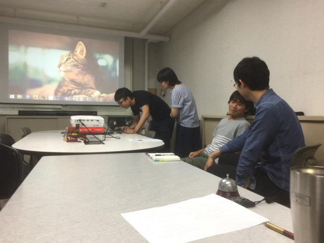
カタログ積んで高さ調整したり， |
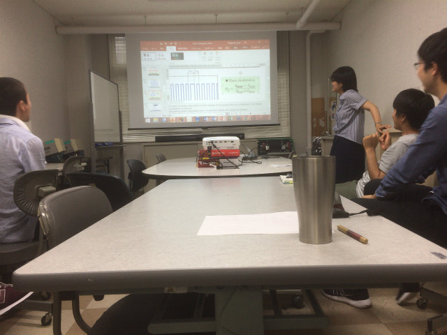
調整しても残る微妙なズレ | ||
|
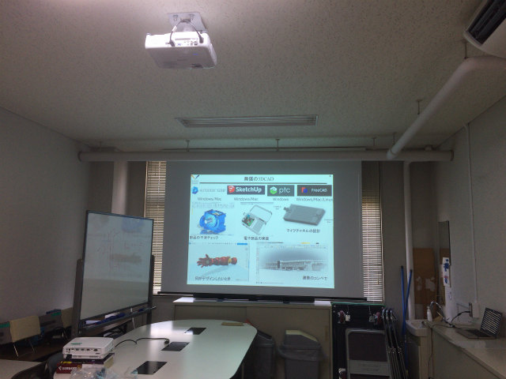
工事は3時間ほど |
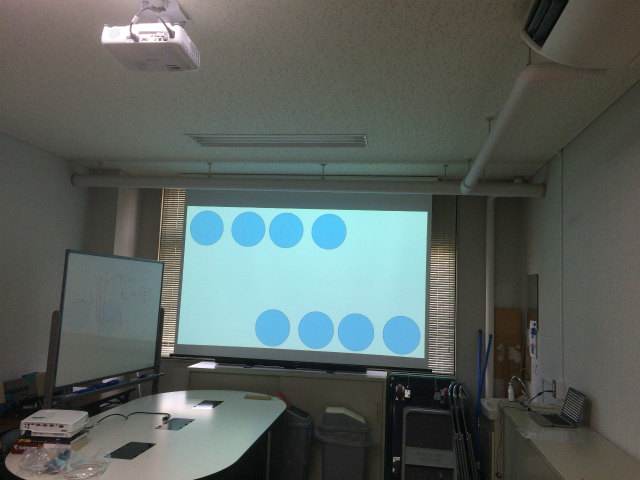
今後の主流の16：9に合わせました | ||
|
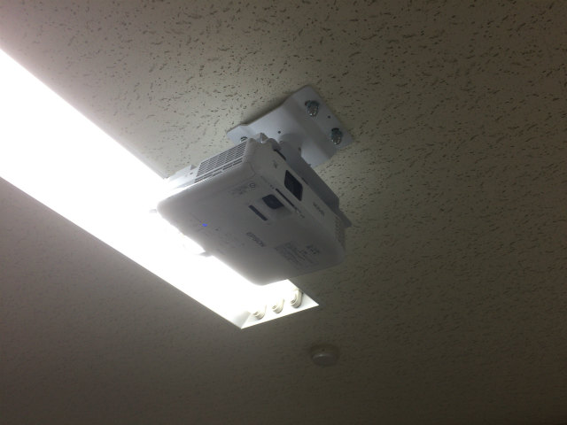
片付けや準備がなくなりました |
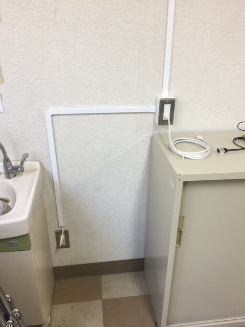
モール配線で電気工事は無し | ||
|
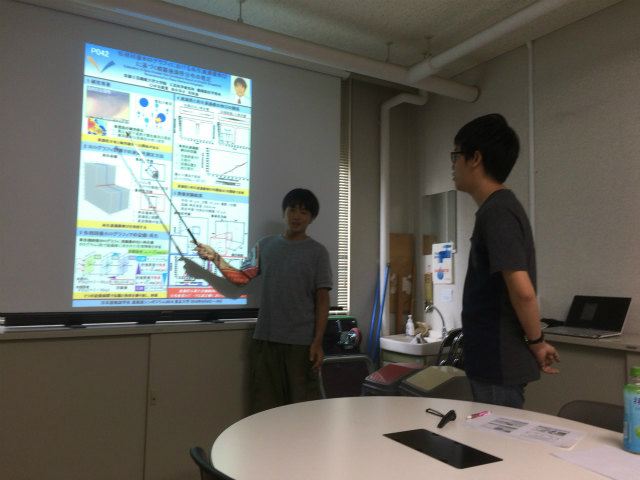
配線が無いので |
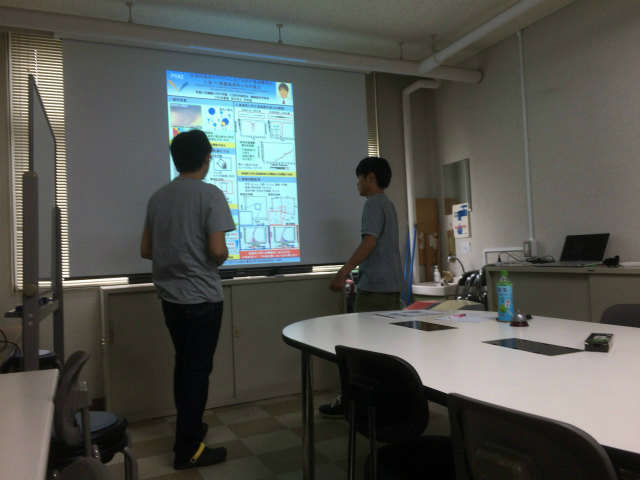
ポスターの練習にも効果 | ||
|
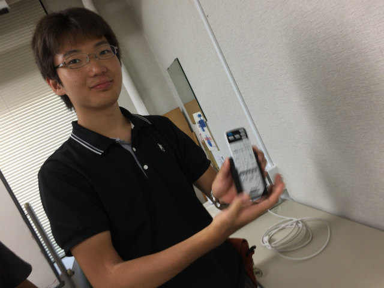
B4のI田くんが3Dプリンターでリモコン入れ出力 |
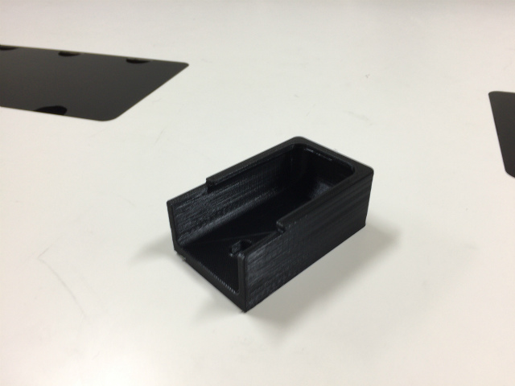
積層痕なければ付属品とおもうレベル | ||
|
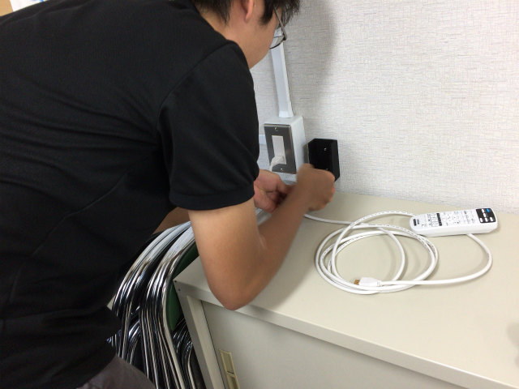
ネジで留める貫通孔も2カ所アリ |
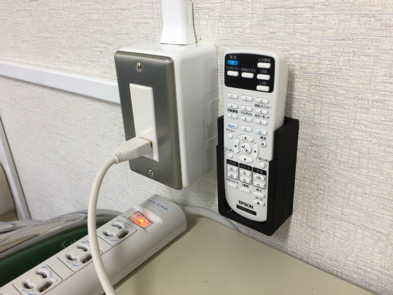
より完全なシステムになりました | ||